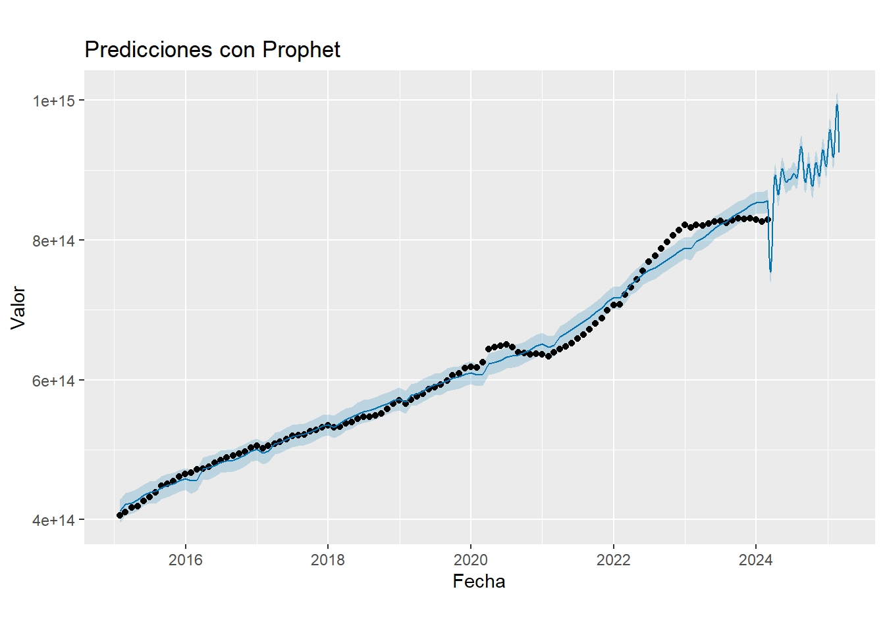
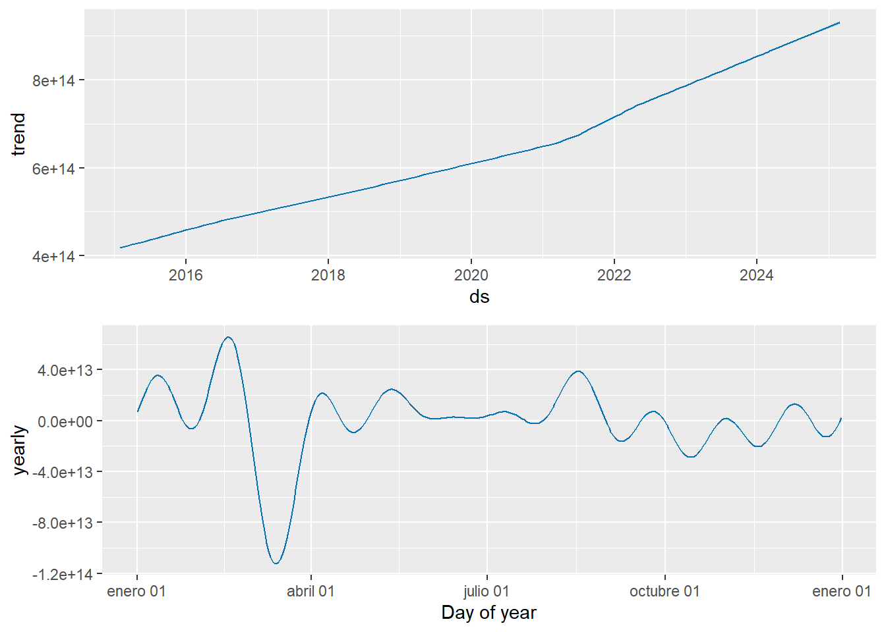

12 Algoritmo Facebook´s Prophet
## package 'prophet' successfully unpacked and MD5 sums checked
##
## The downloaded binary packages are in
## D:\Usuarios\dir.tic\AppData\Local\Temp\RtmpaML7Qg\downloaded_packagesdata_agrupada <- data_agrupada %>%
rename(ds = FECHA_CORTE, y = Vigente)
model <- prophet(data_agrupada)# Crear un data frame con fechas futuras
future <- make_future_dataframe(model, periods = 365)
# Hacer las predicciones
forecast <- predict(model, future)
# Mostrar las predicciones
tail(forecast[, c('ds', 'yhat', 'yhat_lower', 'yhat_upper')])## ds yhat yhat_lower yhat_upper
## 470 2025-02-23 9.727443e+14 9.560862e+14 9.891513e+14
## 471 2025-02-24 9.649326e+14 9.466726e+14 9.805899e+14
## 472 2025-02-25 9.561289e+14 9.381406e+14 9.735787e+14
## 473 2025-02-26 9.464692e+14 9.302673e+14 9.627711e+14
## 474 2025-02-27 9.361103e+14 9.192101e+14 9.513544e+14
## 475 2025-02-28 9.252262e+14 9.078968e+14 9.420562e+14set.seed(42)
actual_sales_2023 <- rpois(365, lambda = 210)
actual_df <- data.frame(ds = seq(as.Date('2023-01-01'), as.Date('2023-12-31'), by = 'day'), y = actual_sales_2023)
# Unir las predicciones con los datos reales
comparison_df <- merge(forecast[, c('ds', 'yhat')], actual_df, by = 'ds')
# Calcular el error
comparison_df <- comparison_df %>%
mutate(error = y - yhat, abs_error = abs(error))
mae <- mean(comparison_df$abs_error)
print(paste('Mean Absolute Error (MAE):', mae))## [1] "Mean Absolute Error (MAE): NaN"# Graficar el modelo y las predicciones
plot(model, forecast) +
ggtitle("Predicciones con Prophet") +
xlab("Fecha") +
ylab("Valor")
En estos gráficos podemos ver:
Línea azul: Representa los valores reales del capital vigente en mora a lo largo del tiempo.
Banda gris: Representa el intervalo de predicción del modelo Prophet Facebook. La banda gris indica el rango dentro del cual se espera que se encuentre el valor real con una cierta probabilidad (generalmente 95%).
Línea punteada azul: Representa la predicción puntual del modelo Prophet Facebook para el capital vigente en mora. Es decir, el valor que el modelo predice como el más probable para cada punto en el tiempo.
En general, el modelo Prophet Facebook parece ajustarse bien a los datos históricos del capital vigente en mora. La banda de predicción abarca los valores reales de la serie, lo que indica que el modelo es capaz de capturar la variabilidad de la serie.
Sin embargo, es importante tener en cuenta que las predicciones son solo estimaciones y no son completamente precisas. El valor real del capital vigente en mora podría estar fuera de la banda de predicción, incluso con una probabilidad del 5%.
# Graficar los componentes del modelo (tendencia y estacionalidad)
prophet_plot_components(model, forecast)
Sobre los componentes del modelo se evidencia una combinación de una tendencia ascendente con una estacionalidad clara, con disminuciones al final de cada trimestre, lo que puede indicar un aumento en los pagos que genera un acto reflejo en la disminución del capital Vigente en mora.